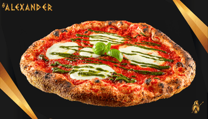
Aura — La nostra Margherita (€9,50)
Margherita rivisitata con polpa di pomodori italiani, bufala campana DOP e crema al basilico casereccia: colori vivaci, profumo di forno a legna e un classico che lascia il segno.
Piazza Molines, 45 — 10094 Giaveno TO
Con 100 coperti in sala, saletta con camino e dehor climatizzato, il Ristorante Valsangone è ideale per pranzo e cena in Val Sangone. Nei weekend e in stagione porcini la prenotazione è consigliata.
In Piazza Molines 45, nel cuore di Giaveno, il Ristorante Valsangone è un punto di riferimento storico della Val Sangone. Rilevato dal gruppo Alexander nel 2023, il locale unisce la tradizione della cucina di montagna — con particolare attenzione ai funghi porcini — all'angolo pizza Alexander con forno a legna a vista. Non siamo una trattoria generica né una pizzeria napoletana: qui trovi la cucina del territorio e la pizza stile Alexander, con la stessa cura per materie prime e impasto che contraddistingue tutte le sedi del gruppo.
Giaveno è da sempre legata ai porcini: i boschi della Val Sangone offrono condizioni ideali per il Boletus edulis, celebrato anche dalla storica Sagra del Fungo. Da maggio a novembre il menu del ristorante si arricchisce di piatti dedicati: primi, secondi e antipasti che mettono al centro il sapore intenso del fungo fresco. Il resto dell'anno, la proposta piemontese resta ampia e stagionale — dalla battuta di Fassona alla tagliata Coalvi, dai plin al vitello tonnato.
L'angolo pizza Alexander completa l'esperienza. A cena serviamo la pizza tonda stile Alexander: lievitazione 48 ore con prefermento biga, fermenti lattici vivi e lievito madre, cottura lenta oltre i 3 minuti a circa 350°C, farina di mais rustica macinata a pietra e grano italiano tipo 1, acqua di sorgente di montagna. A pranzo — quando siamo l'unica sede Alexander aperta — la pizza è disponibile in versione tegamino, perfetta per una pausa veloce ma curata durante escursioni o gite in valle.
Il locale accoglie fino a 100 coperti nella sala principale, più una saletta con camino da 40 posti e un dehor climatizzato da 50 posti utilizzabile tutto l'anno. Il forno a legna è visibile dalla sala: profumo, calore e spettacolo della cottura fanno parte dell'esperienza. L'atmosfera è quella del ristorante di montagna autentico, adatta a pranzi in famiglia, cene conviviali e serate tra amici dopo una giornata in Val Sangone.
La pizza senza glutine è una nostra specialità. Il Ristorante Valsangone è riconosciuto AIC (Associazione Italiana Celiachia) ed è l'unico locale AIC a Giaveno. L'impasto senza glutine viene preparato in casa ogni giorno con miscele di amidi di alta qualità senza legumi, materie prime prive di glutine all'origine (non deglutinate) e senza basi precotte. Ogni pizza del menù è disponibile anche in versione senza glutine, con la stessa lievitazione e cottura in forno a legna.
Completano l'offerta una selezione di birre artigianali del Birrificio Hibu — inclusa Entropia, golden ale anche senza glutine — vini piemontesi e dolci della tradizione. Per chi preferisce portare a casa la pizza, il servizio d'asporto è attivo negli orari di apertura: ordina online, telefona al +39 011 937 6286 o scrivici su WhatsApp. Il delivery a domicilio non è disponibile.
Aperti tutti i giorni: pranzo 12:00-15:00, cena 18:30-23:30. Chiusi solo il 25 dicembre e il 1° gennaio. Ti aspettiamo in Piazza Molines 45 per scoprire il meglio della Val Sangone — porcini, piatti piemontesi e pizza Alexander nello stesso locale.
Tre elementi che distinguono la nostra proposta a Giaveno.
Ristorante storico della Val Sangone con specialità ai funghi porcini da maggio a novembre. Piatti piemontesi autentici — plin, tagliata Coalvi, battuta Fassona, vitello tonnato — affiancati all'angolo pizza Alexander.
Giaveno è l'unica sede Alexander con servizio pranzo (12:00-15:00). A pranzo: ristorante alla carta e pizza solo al tegamino. A cena: pizza tonda stile Alexander in forno a legna. 100 coperti, saletta camino e dehor climatizzato tutto l'anno.
Riconosciuti AIC e unici a Giaveno. Impasto senza glutine fatto in casa ogni giorno, stessa lievitazione 48 ore e cottura in forno a legna. Anche birra Entropia del Birrificio Hibu senza glutine.
Le creazioni signature della linea "Epiche" e la pizza senza glutine AIC. A cena in versione tonda stile Alexander; a pranzo in tegamino. Scopri il menu completo.

Margherita rivisitata con polpa di pomodori italiani, bufala campana DOP e crema al basilico casereccia: colori vivaci, profumo di forno a legna e un classico che lascia il segno.
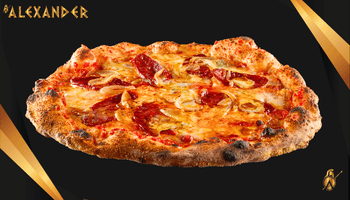
La preferita dai clienti di Giaveno: pomodoro, fior di latte, gorgonzola DOP, cipolle dorate in padella, scamorza affumicata e salamino piccante — contrasto perfetto tra dolcezza e piccante.
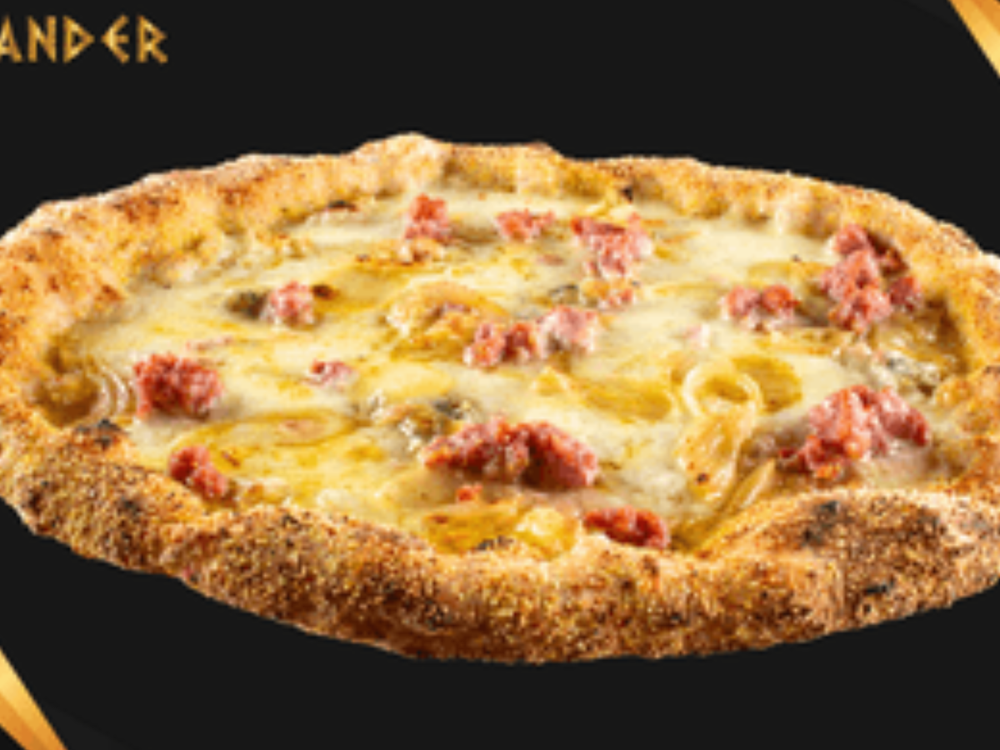
Salsiccia, fontina, cipolle saltate, fior di latte, gorgonzola e grana padano — una delle Epiche più ordinate a Giaveno, equilibrata e saporita.
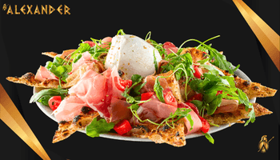
La nostra focaccia più pregiata: burrata DOP, prosciutto crudo di filiera piemontese, rucola e pomodorini — freschezza, sapidità e croccantezza nella stessa creazione.
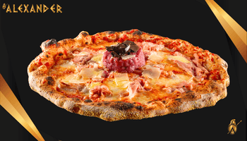
La pizza che porta il nostro nome: pomodoro, fior di latte, fontina, battuta al coltello di fassone piemontese, prosciutto cotto, olio al tartufo e grana — ricca, elegante, da dividere o non condividere affatto.
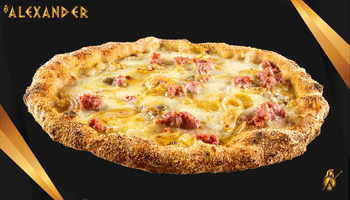
Ogni pizza del menù anche in versione senza glutine: impasto dedicato fatto in casa ogni giorno, stessa lievitazione e cottura in forno a legna. Riconosciuti AIC — l'unico locale AIC a Giaveno.
Da maggio a novembre, quando i boschi della Val Sangone regalano il miglior porcino.
Classici della tradizione piemontese, disponibili tutto l'anno nel menu del Ristorante Valsangone.
Quando cerchi un ristorante a Giaveno o una pizzeria in Val Sangone, il Ristorante Valsangone unisce entrambe le esperienze sotto lo stesso tetto. A pranzo il ristorante è alla carta — primi e secondi piemontesi, specialità ai porcini in stagione — mentre la pizza è disponibile solo al tegamino, esclusivamente nel turno di pranzo. A cena la proposta si amplia con la pizza tonda stile Alexander cotta nel forno a legna a vista — non napoletana, non romana: uno stile tutto nostro, con lievitazione 48 ore, biga, fermenti vivi e cottura lenta a 350°C.
Giaveno è l'unica sede Alexander aperta a pranzo: pranzo 12:00-15:00, cena 18:30-23:30, tutti i giorni. Con 100 coperti in sala, saletta camino e dehor climatizzato da 50 posti, accogliamo famiglie, gruppi e coppie in cerca di un'atmosfera autentica di montagna. Nei weekend e durante la stagione dei porcini la prenotazione è consigliata.
Per portare a casa la pizza Alexander, l'asporto è disponibile negli orari di apertura: ordina dalla piattaforma in pagina, telefona al +39 011 937 6286 o scrivici su WhatsApp. Il delivery a domicilio non è attivo.
La pizza senza glutine è la nostra specialità: ogni pizza del menu è disponibile anche in versione senza glutine.
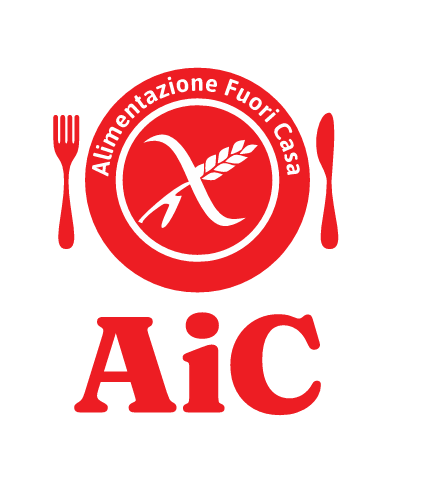
Il Ristorante Valsangone è riconosciuto da AIC (Associazione Italiana Celiachia) e presente nella guida ufficiale "Alimentazione Fuori Casa".
Siamo l'unico locale AIC a Giaveno. Tra Pinerolo, Piossasco e Giaveno siamo gli unici locali AIC della zona.
A differenza di molti locali, non usiamo basi pre-cotte o pre-fatte: il nostro impasto senza glutine viene preparato in casa ogni giorno con miscele di amidi di alta qualità senza legumi, utilizzando materie prime prive di glutine all'origine e non prodotti deglutinati. Stesso processo di lievitazione 48 ore, stessa cottura in forno a legna, stesso sapore della nostra pizza classica.
Anche in cantina trovi opzioni adatte: la birra artigianale Entropia del Birrificio Hibu è disponibile anche in versione senza glutine, in bottiglia e alla spina.
Al Ristorante Valsangone proponiamo la linea di birre artigianali del Birrificio Hibu, disponibili in bottiglia da 33 cl e in polikeg da 20 litri. In evidenza Entropia Golden Ale, anche in versione senza glutine — l'alleata perfetta per chi è celiaco e non vuole rinunciare a una birra artigianale di qualità.
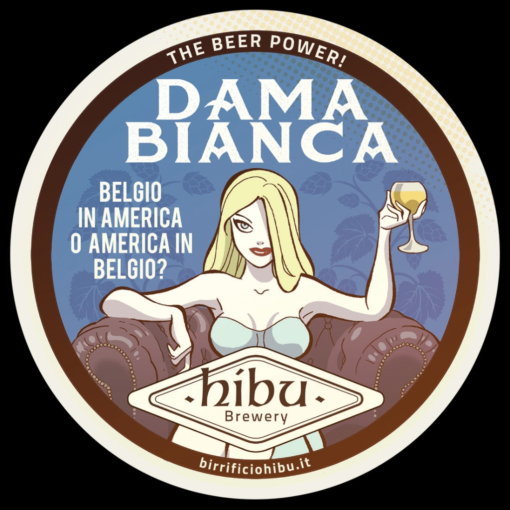
White IPA
Seducente luppolata di frumento, con scorza d'arancia amara e coriandolo. Note fruttate e speziatura di pepe bianco.
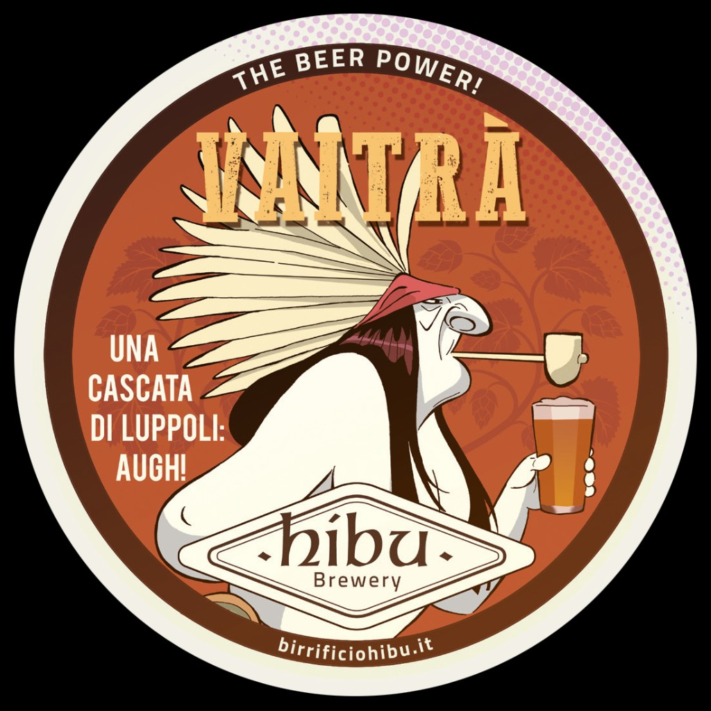
APA — American Pale Ale
L'americana dal palato amaro: cascata di luppoli americani su una base maltata equilibrata.
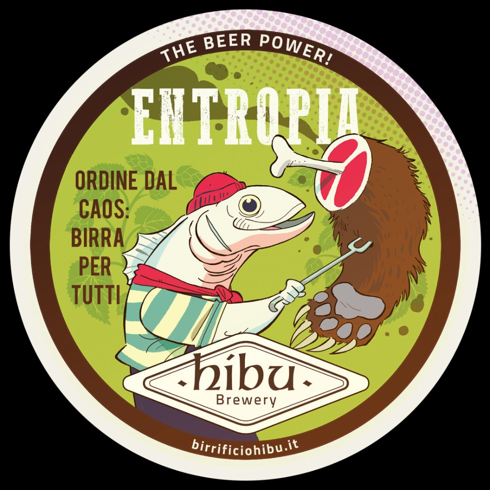
Golden Ale
Bionda in stile britannico, mix di luppoli inglesi e americani, secca e agrumata.
Anche senza glutine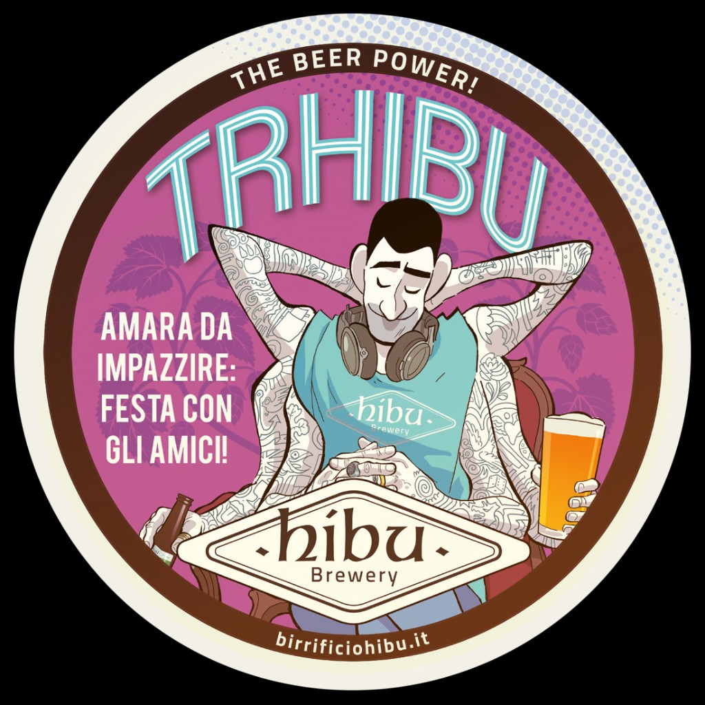
American IPA
Decisa e ricca di profumi, luppoli americani, sferzata agrumata e resinosa, corpo rotondo.
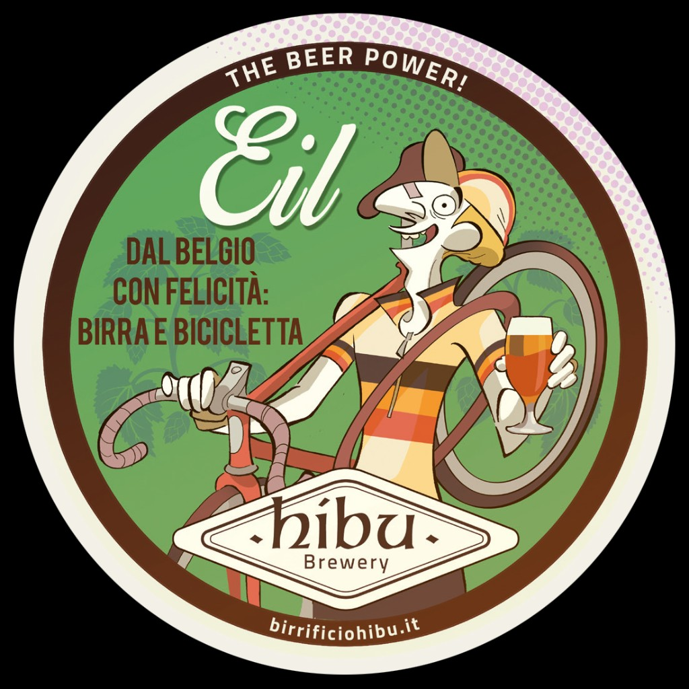
Belgian Ale
Belga fruttata e speziata, caramello predominante, finale dolce e avvolgente.
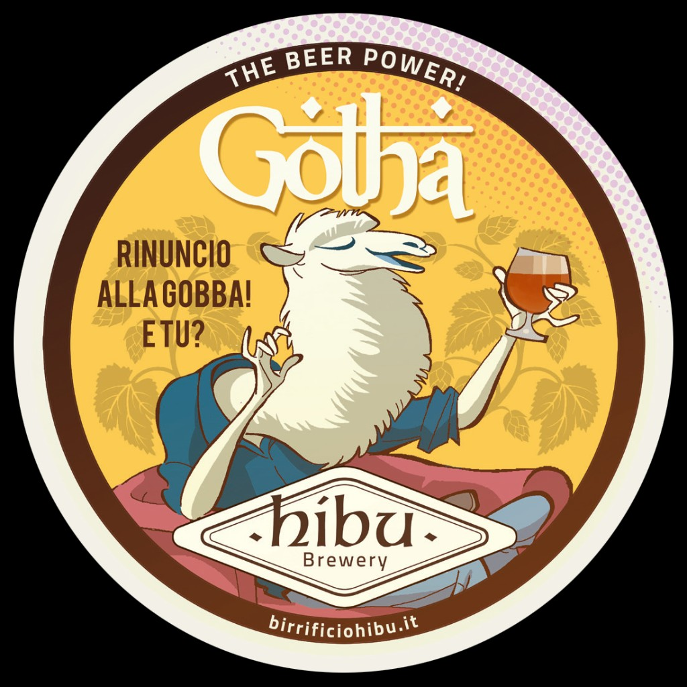
Tripel — rifermentata in bottiglia
Belga decisa, rifermentata in bottiglia, strutturata con note speziate e floreali.
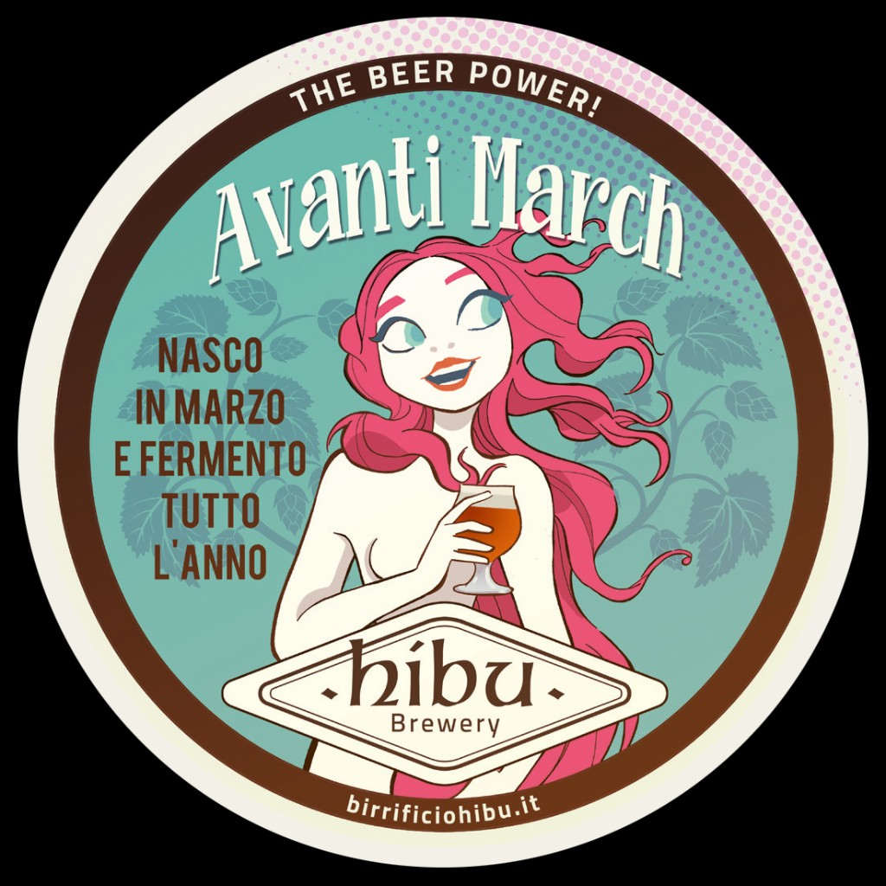
Spicy Saison
Secca e speziata, luppoli europei, scorze d'arancia amara, pepe rosa e zenzero.
Quattro proposte in fusto per accompagnare pizza e cucina piemontese — dalla birra artigianale senza glutine alle classiche internazionali.
Golden Ale · Birrificio Hibu
La nostra birra artigianale senza glutine anche al rubinetto: profilo secco e agrumato, ideale per chi è celiaco e non vuole rinunciare alla spina.
Senza glutineLager · bassa fermentazione
Birra dorata dal gusto pulito, aroma di cereali e luppolo equilibrato. Schiuma fine e persistente, beverina e versatile a tavola.
In fustoBirra d'abbazia belga
Bionda d'abbazia dal carattere morbido e fruttato, fermentazione alta. Classico abbinamento a primi piemontesi e pizza.
In fustoStout irlandese
La storica stout alla spina: corpo cremoso, note tostate e di caffè, nitrogenata per una schiuma setosa. Un classico del pub.
In fustoOrdina la pizza Alexander d'asporto o consulta il menu completo del Ristorante Valsangone.
Raggiungici in Piazza Molines 45, nel centro di Giaveno.
🏆 Tripadvisor Travellers' Choice
Riconoscimento Tripadvisor per il Ristorante Valsangone a Giaveno
· oltre 1.200 recensioni su Google Maps
Le citazioni qui sotto sono tratte da recensioni pubbliche su Google Maps. Per leggere tutte le opinioni aggiornate, apri la scheda del locale.
"A cena con un amico, abbiamo preso tajarin ai funghi porcini e funghi fritti. Ottimo il cibo, molto apprezzato il servizio. Il cibo buonissimo con porzioni assolutamente soddisfacenti. Locale accogliente, pulito, tavoli distanziati il giusto, armonioso."
"Ristorante nella piazza principale di Giaveno: tutto il cibo era ottimo, ho pranzato a base di porcini locali deliziosi. Consiglio a tutti di venire in questo ristorante, vi troverete bene. Ottimo rapporto qualità prezzo!"
"Ottimo locale in pieno centro paese, con piatti della tradizione piemontese e possibilità di degustare anche ottimo pesce. Il tutto con personale molto cordiale e disponibile."
"Oggi abbiamo festeggiato la laurea di nostro figlio Andrea. Come sempre il personale gentile, competente e sempre molto attento; in questa giornata particolare ci siamo sentiti coccolati. Un grazie particolare a Miriam per la sua attenzione ai dettagli."
"Siamo stati io e la mia fidanzata che è celiaca: focaccia senza glutine buonissima, poi risotto e tagliatelle con i funghi molto buoni, leggeri ma gustosi. Camerieri preparati e gentili, in grado di capire l'esigenza del cliente e consigliare i piatti. Complimenti a Riccardo che ci ha seguiti."
"We went to eat pizza, very light dough, gluten-free pizza, delicious, we will be back again, thanks."
Tutto quello che devi sapere sul Ristorante Valsangone a Giaveno.
Il Ristorante Valsangone si trova in Piazza Molines 45, 10094 Giaveno (TO), nel centro della Val Sangone. All'interno del locale opera anche l'angolo pizza Alexander con forno a legna a vista. Parcheggi pubblici disponibili nelle vicinanze.
Siamo aperti tutti i giorni: pranzo dalle 12:00 alle 15:00 e cena dalle 18:30 alle 23:30. Le uniche chiusure annuali sono il 25 dicembre e il 1° gennaio.
Sì, Giaveno è l'unica sede del gruppo Alexander con servizio pranzo. A pranzo il ristorante è alla carta; la pizza è disponibile solo al tegamino (non la tonda classica). A cena serviamo la pizza tonda stile Alexander cotta in forno a legna. Il vecchio menu pranzo a prezzo fisso non è più attivo.
Puoi prenotare online dal modulo in cima a questa pagina, telefonando al +39 011 937 6286 o via WhatsApp al +39 353 468 6654. Con 100 coperti più saletta camino e dehor, nei weekend e durante la stagione dei porcini la prenotazione è consigliata.
Sì, l'asporto è disponibile negli orari di apertura (pranzo e cena). Puoi ordinare dalla piattaforma in pagina, per telefono o via WhatsApp. Il delivery a domicilio non è attivo: tutti gli ordini vanno ritirati in sede in Piazza Molines 45.
Da maggio a novembre proponiamo piatti dedicati ai porcini: tagliolino ai porcini, funghi porcini fritti, risotto ai porcini, battuta Fassona ai porcini e tagliata Coalvi con porcini, oltre ad altre proposte stagionali. Giaveno è storicamente legata alla tradizione micologica della Val Sangone.
La pizza Alexander ha uno stile tutto suo — non napoletana, non romana: cottura lenta oltre i 3 minuti a circa 350°C, idratazione al 65%, lievitazione 48 ore con prefermento biga, fermenti lattici vivi e lievito madre. Farine: mais rustica macinata a pietra + grano italiano tipo 1, acqua di sorgente di montagna. Forno a legna a vista in sala.
Sì, siamo riconosciuti AIC (Associazione Italiana Celiachia) e siamo l'unico locale AIC a Giaveno. Ogni pizza del menù è disponibile in versione senza glutine, con impasto dedicato preparato in casa ogni giorno — senza basi precotte. Approfondisci la nostra pizza senza glutine.
Sì, proponiamo la linea del Birrificio Hibu in bottiglia da 33 cl e polikeg da 20 litri: Dama Bianca, Vaitrà, Entropia (anche senza glutine), Trhibu, Eil, Gotha e Avanti March. Alla spina: Entropia Senza Glutine, Sans Souci, Affligem Blonde e Guinness.
Il locale dispone di 100 coperti in sala principale, una saletta con camino da 40 posti e un dehor climatizzato da 50 posti utilizzabile tutto l'anno.
Accettiamo contanti, carte di credito, bancomat e pagamenti contactless.
Sì, il Ristorante Valsangone è aperto tutti i giorni della settimana, domenica inclusa, con orario pranzo 12:00-15:00 e cena 18:30-23:30. Chiusi solo il 25 dicembre e il 1° gennaio.